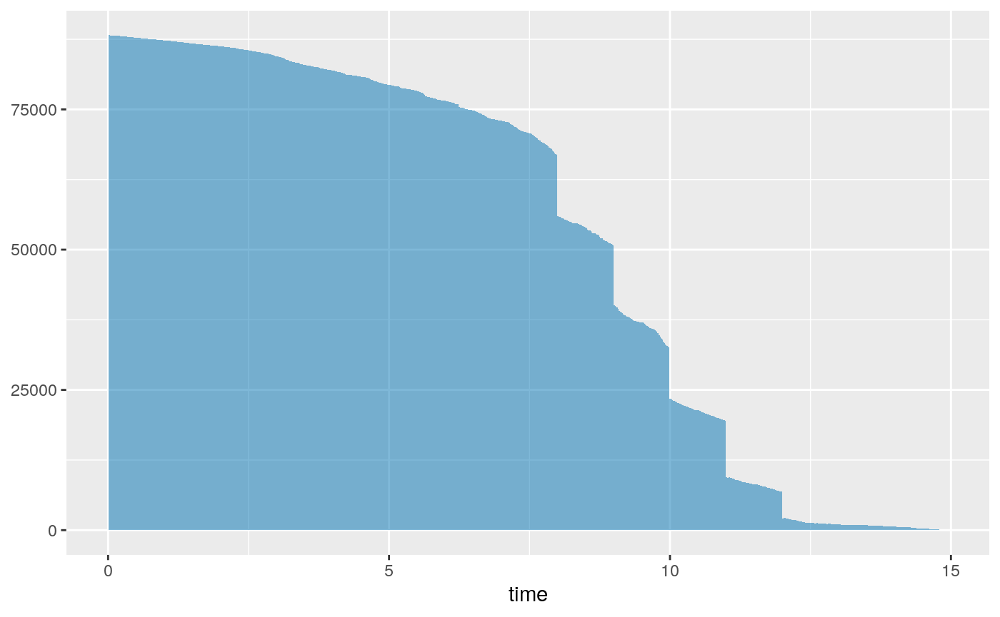
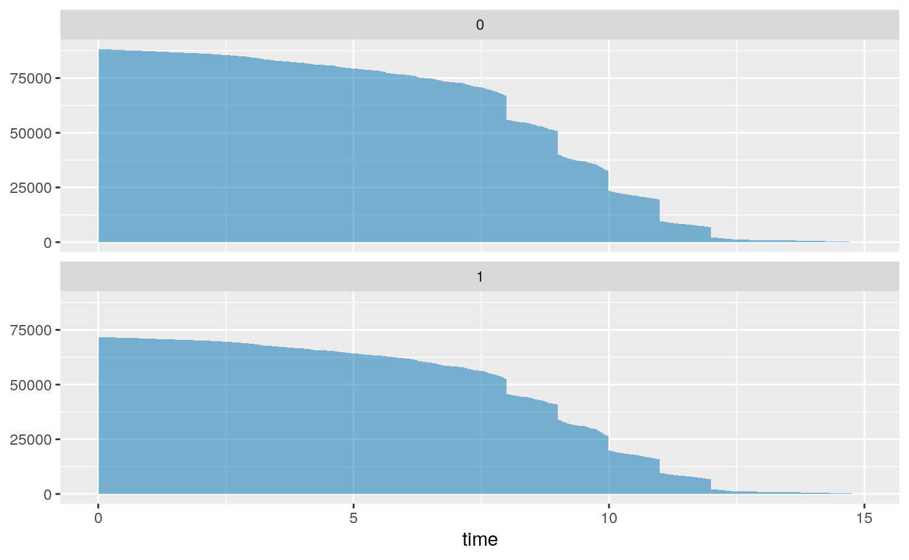
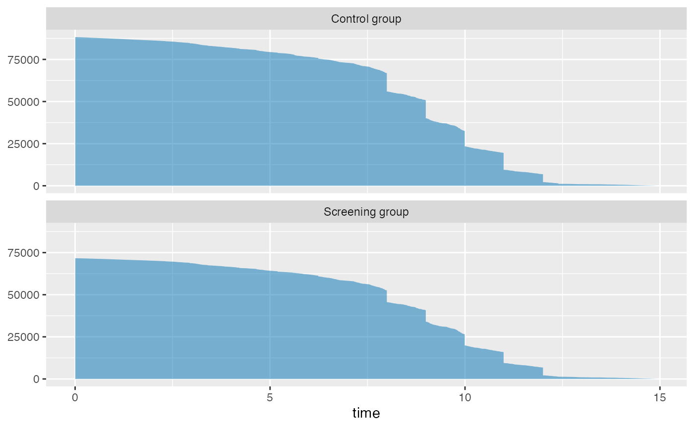
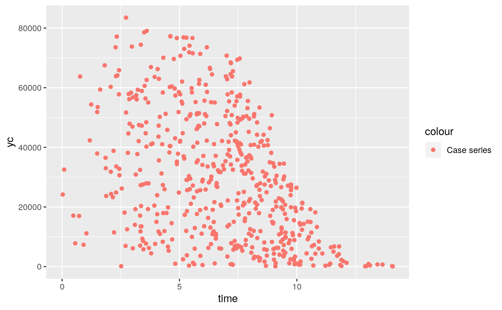
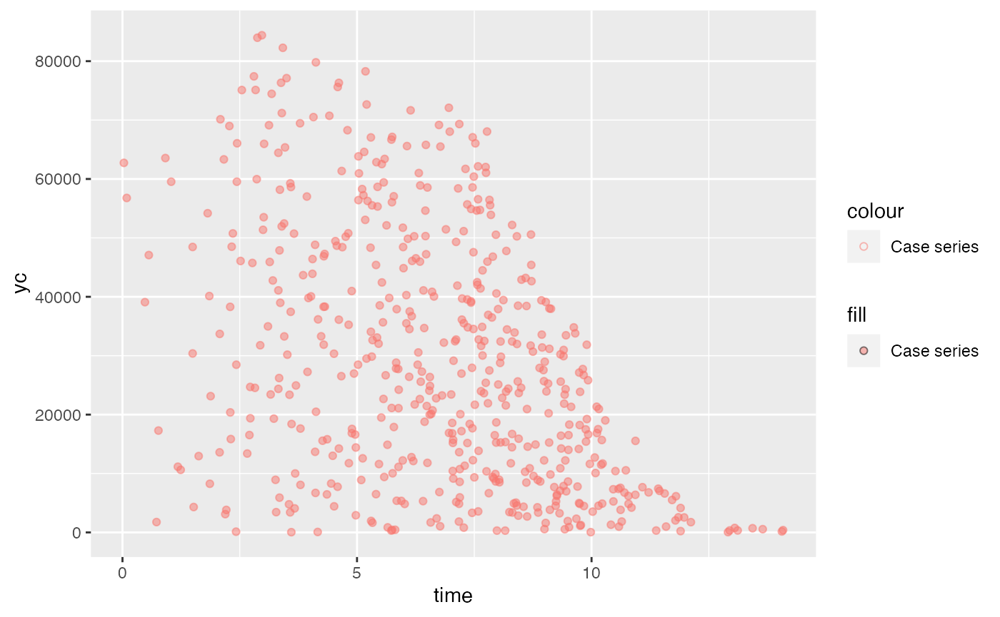
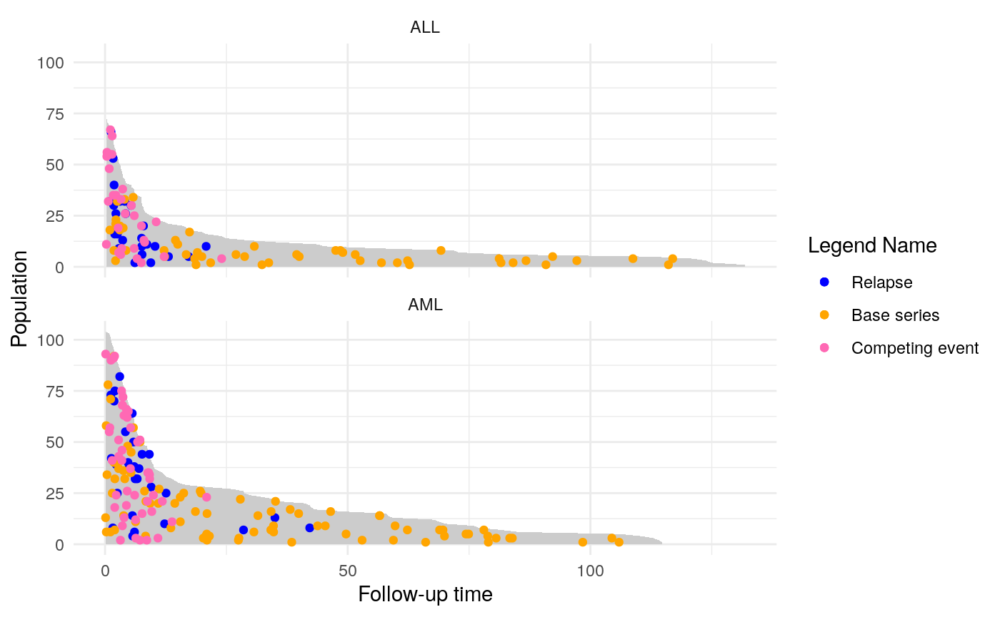

customizingpopTime.Rmdlibrary(survival)
library(casebase)
library(ggplot2)
library(data.table)
# create poptime exposure object for ERSPC data
x <- popTime(ERSPC, time = "Follow.Up.Time", event = "DeadOfPrCa", exposure = "ScrArm")
head(x)## ScrArm time event original.time original.event event status ycoord yc
## 1: 0 0.0027 0 0.0027 0 censored 88232 0
## 2: 0 0.0027 0 0.0027 0 censored 88231 0
## 3: 0 0.0027 0 0.0027 0 censored 88230 0
## 4: 0 0.0027 0 0.0027 0 censored 88229 0
## 5: 0 0.0137 0 0.0137 0 censored 88228 0
## 6: 0 0.0137 0 0.0137 0 censored 88227 0
## n_available
## 1: 0
## 2: 0
## 3: 0
## 4: 0
## 5: 0
## 6: 0In this vignette, we explain in details how to customize population time plots. More specifically, we details the inner workings of the plot method for objects of class popTime and popTimeExposure.
.params argumentsThe user can have greater control over the aesthetics of a population plot by specifying these in the .params arguments. These need to be specified as lists and are subsequently passed on to the following ggplot2 functions:
ribbon.params –> ggplot2::geom_ribbon()
case.params –> ggplot2::geom_point()
base.params –> ggplot2::geom_point()
competing.params –> ggplot2::geom_point()
legend.params –> ggplot2::scale_colour_manual()
theme.params –> ggplot2::theme()
Following the suggestion from the ggplot2 book, we use the utils::modifyList function to replace the corresponding default values. For example, the default arguments passed to the geom_ribbon function for plotting the area are given by
## $data
## ScrArm time event original.time original.event event status ycoord
## 1: 0 0.0027 0 0.0027 0 censored 88232
## 2: 0 0.0027 0 0.0027 0 censored 88231
## 3: 0 0.0027 0 0.0027 0 censored 88230
## 4: 0 0.0027 0 0.0027 0 censored 88229
## 5: 0 0.0137 0 0.0137 0 censored 88228
## ---
## 159889: 1 14.9405 0 14.9405 0 censored 5
## 159890: 1 14.9405 0 14.9405 0 censored 4
## 159891: 1 14.9405 0 14.9405 0 censored 3
## 159892: 1 14.9405 0 14.9405 0 censored 2
## 159893: 1 14.9405 0 14.9405 0 censored 1
## yc n_available
## 1: 0 0
## 2: 0 0
## 3: 0 0
## 4: 0 0
## 5: 0 0
## ---
## 159889: 0 0
## 159890: 0 0
## 159891: 0 0
## 159892: 0 0
## 159893: 0 0
##
## $mapping
## Aesthetic mapping:
## * `x` -> `time`
## * `ymin` -> 0
## * `ymax` -> `ycoord`
##
## $fill
## [1] "grey80"(Note that the variables time and ycoord are columns created by the casebase::popTime function). Suppose we want to change the fill color. We simply specify this color in the ribbon.params argument:
We then call the utils::modifyList function to override the function defaults:
(new_ribbon_params <- utils::modifyList(list(data = x,
mapping = aes(x = time, ymin = 0, ymax = ycoord),
fill = "grey80"),
ribbon.params))## $data
## ScrArm time event original.time original.event event status ycoord
## 1: 0 0.0027 0 0.0027 0 censored 88232
## 2: 0 0.0027 0 0.0027 0 censored 88231
## 3: 0 0.0027 0 0.0027 0 censored 88230
## 4: 0 0.0027 0 0.0027 0 censored 88229
## 5: 0 0.0137 0 0.0137 0 censored 88228
## ---
## 159889: 1 14.9405 0 14.9405 0 censored 5
## 159890: 1 14.9405 0 14.9405 0 censored 4
## 159891: 1 14.9405 0 14.9405 0 censored 3
## 159892: 1 14.9405 0 14.9405 0 censored 2
## 159893: 1 14.9405 0 14.9405 0 censored 1
## yc n_available
## 1: 0 0
## 2: 0 0
## 3: 0 0
## 4: 0 0
## 5: 0 0
## ---
## 159889: 0 0
## 159890: 0 0
## 159891: 0 0
## 159892: 0 0
## 159893: 0 0
##
## $mapping
## Aesthetic mapping:
## * `x` -> `time`
## * `ymin` -> 0
## * `ymax` -> `ycoord`
##
## $fill
## [1] "#0072B2"Finally, we use base::do.call to execute the geom_ribbon function on this list:

The default arguments to the facet.params argument is given by:
exposure_variable <- attr(x, "exposure")
default_facet_params <- list(facets = exposure_variable, ncol = 1)The poulation time area stratified by treatment arm is then plotted using the following code
ggplot() +
base::do.call("geom_ribbon", new_ribbon_params) +
base::do.call("facet_wrap", default_facet_params) 
We can modify the facet labels by either changing the factor labels in the data or specifying the labeller argument. See this blog post for further details. Here is an example of how we can change the facet labels using the plot method provided by the casebase package:
# Use character vectors as lookup tables:
group_status <- c(
`0` = "Control Arm",
`1` = "Screening Arm"
)
plot(x,
add.case.series = FALSE, # do not plot the case serires
facet.params = list(labeller = labeller(ScrArm = group_status), # change labels
strip.position = "right") # change facet position
) 
Suppose we want to change the color of the points and the legend labels. We use the bmtcrr dataset as the example in this section.
The default colors for the case series, base series and competing event are given by:
If you only want to change the color points, you must specify a named vector exactly as specified in the cols object created above. Note that the names Case series, Base Series and Competing event must remain the same, otherwise the function won’t know how to map the colors to the corresponding points. This is because the colour aesthetic mapping in the geom_point functions have been set to Case series, Base Series and Competing event. For example, the default call to geom_point for the case series is given by:
ggplot() + do.call("geom_point", list(data = x[event == 1],
mapping = aes(x = time, y = yc, colour = "Case series")))
We define a new set of colors:
We then pass new_cols to the legend.params argument. Internally, this gets passed to the ggplot2::scale_color_manual function:
do.call("scale_colour_manual", utils::modifyList(
list(name = element_blank(),
breaks = c("Case series", "Competing event", "Base series"),
values = cols), list(values = new_cols))
)Here is the code to only change the colors:
# this data ships with the casebase package
data("bmtcrr")
popTimeData <- popTime(data = bmtcrr, time = "ftime", exposure = "D")## 'Status' will be used as the event variableplot(popTimeData,
add.case.series = TRUE,
add.base.series = TRUE,
add.competing.event = TRUE,
ratio = 1,
comprisk = TRUE,
legend = TRUE,
legend.params = list(values = new_cols))
In order to change both the point colors and legend labels, we must modify the aesthetic mapping of the geom_point calls as follows:
# this data ships with the casebase package
data("bmtcrr")
popTimeData <- popTime(data = bmtcrr, time = "ftime", exposure = "D")## 'Status' will be used as the event variableplot(popTimeData,
add.case.series = TRUE,
add.base.series = TRUE,
add.competing.event = TRUE,
ratio = 1,
comprisk = TRUE,
legend = TRUE,
case.params = list(mapping = aes(x = time, y = yc, colour = "Relapse")),
base.params = list(mapping = aes(x = time, y = ycoord, colour = "Base series")),
competing.params = list(mapping = aes(x = time, y = yc, colour = "Competing event")),
legend.params = list(name = "Legend Name",
breaks = c("Relapse", "Base series", "Competing event"),
values = c("Relapse" = "blue", "Competing event" = "hotpink", "Base series" = "orange")))
NOTE: the lists being passed to the .params arguments must be named arguments, otherwise they will give unexpected behavior. For example
## R version 3.6.2 (2019-12-12)
## Platform: x86_64-pc-linux-gnu (64-bit)
## Running under: Pop!_OS 19.10
##
## Matrix products: default
## BLAS: /usr/lib/x86_64-linux-gnu/blas/libblas.so.3.8.0
## LAPACK: /usr/lib/x86_64-linux-gnu/lapack/liblapack.so.3.8.0
##
## attached base packages:
## [1] stats graphics grDevices utils datasets methods base
##
## other attached packages:
## [1] data.table_1.12.8 ggplot2_3.2.1 casebase_0.2.1.9001
## [4] survival_3.1-8
##
## loaded via a namespace (and not attached):
## [1] Rcpp_1.0.3 compiler_3.6.2 pillar_1.4.3 tools_3.6.2
## [5] digest_0.6.25 nlme_3.1-143 evaluate_0.14 memoise_1.1.0
## [9] lifecycle_0.1.0 tibble_2.1.3 gtable_0.3.0 lattice_0.20-38
## [13] mgcv_1.8-31 pkgconfig_2.0.3 rlang_0.4.4 Matrix_1.2-18
## [17] rstudioapi_0.11 yaml_2.2.1 pkgdown_1.4.1.9000 xfun_0.12
## [21] withr_2.1.2 stringr_1.4.0 dplyr_0.8.3 knitr_1.28
## [25] desc_1.2.0 fs_1.3.1 stats4_3.6.2 tidyselect_0.2.5
## [29] rprojroot_1.3-2 grid_3.6.2 glue_1.3.1 R6_2.4.1
## [33] VGAM_1.1-2 rmarkdown_2.1 farver_2.0.3 purrr_0.3.3
## [37] magrittr_1.5 backports_1.1.5 scales_1.1.0 htmltools_0.4.0
## [41] MASS_7.3-51.5 splines_3.6.2 assertthat_0.2.1 colorspace_1.4-1
## [45] labeling_0.3 stringi_1.4.6 lazyeval_0.2.2 munsell_0.5.0
## [49] crayon_1.3.4